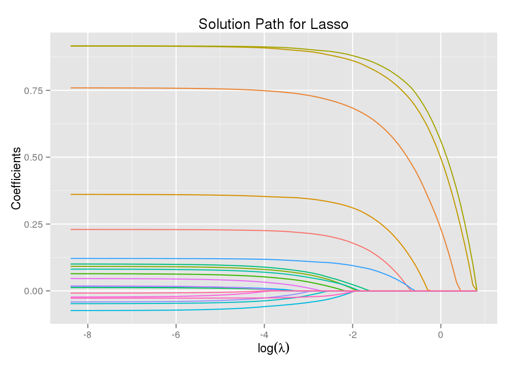
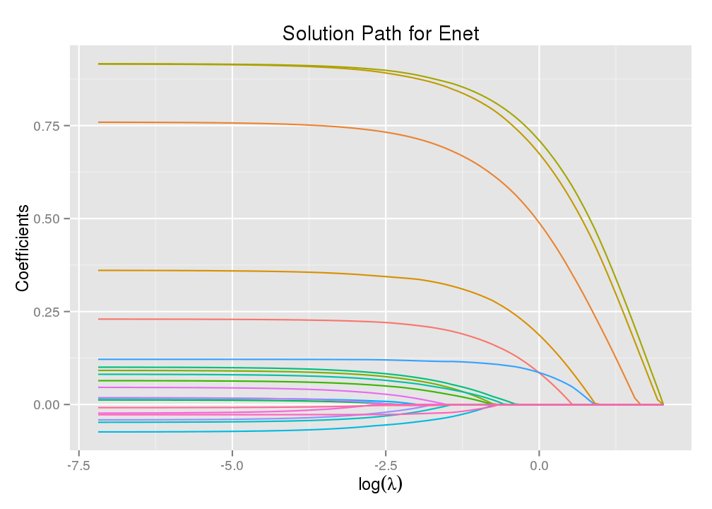
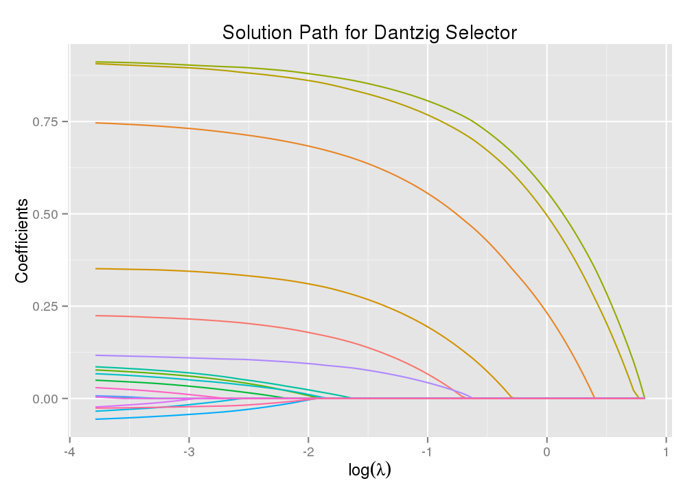
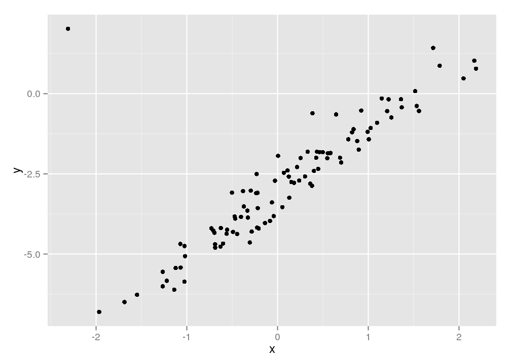
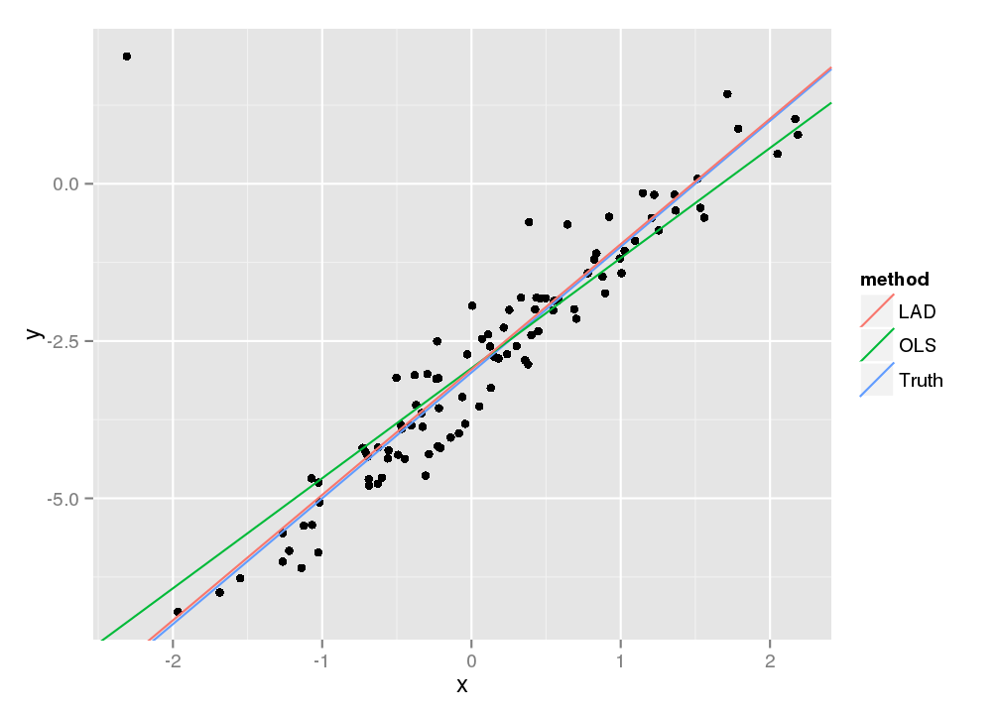
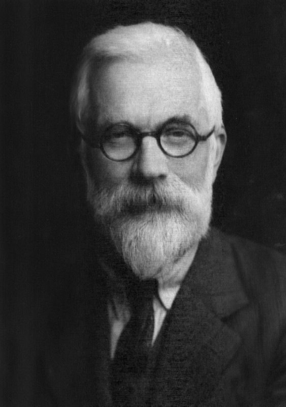
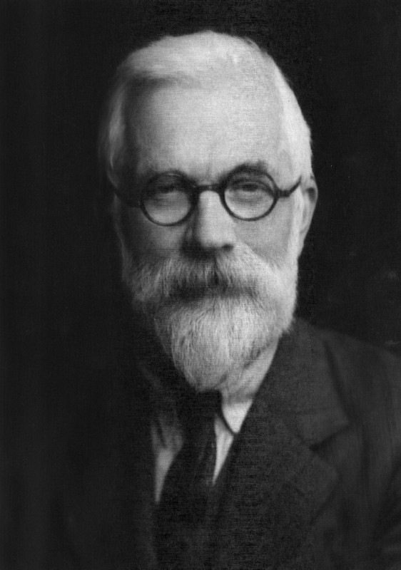

Solving Statistical Optimization Problems with the ADMM Package
Yixuan Qiu
Introduction
ADMM is an R package that utilizes the Alternating Direction Method of Multipliers (ADMM) algorithm to solve a broad range of statistical optimization problems. Presently the models that ADMM has implemented include:
- Lasso & Elastic Net
- Dantzig Selector
- Basis Pursuit
- Least Absolute Deviation
The core part of ADMM is written in efficient C++ code, with the help of the Eigen library and its R wrapper RcppEigen. The computational performance of ADMM is comparable to the most cutting-edge R packages such as glmnet, and outperforms most existing solvers on other models.
The ADMM package is especially suitable for large scale problems, in which an acceptable solution can be obtained in a few iterations for a moderate precision. It also supports parallel computing using OpenMP for even bigger data.
Installation
Currently ADMM can be installed from GitHub using the devtools package.
# install devtools package if not present
if(!require("devtools")) install.packages("devtools")
library(devtools)
install_github("yixuan/ADMM")ADMM relies on extension R packages RcppEigen, rARPACK and ggplot2. The install_github() command above will also install these dependencies if required.
Algorithms
The ADMM package is an implementation of the ADMM algorithm on a number of popular statistical models. The ADMM algorithm solves problems of the form
\[\begin{aligned} \text{minimize}\quad & f(x)+g(z)\\ \text{subject to}\quad & Ax + Bz = c \end{aligned}\]
where \(x\), \(z\) are vectors, \(A\) and \(B\) are matrices of suitable dimensions, and \(f\), \(g\) are convex functions.
A wide range of statistical optimization problems can be written in this form, including the ones that this package has implemented.
ADMM algorithm can be expressed in the following iterative update equations:
\[\begin{align} x^{k+1} & :=\underset{x}{\arg\min}\left(f(x)+\frac{\rho}{2}\Vert Ax+Bz^{k}-c+y^{k}/\rho\Vert_{2}^{2}\right)\\ z^{k+1} & :=\underset{z}{\arg\min}\left(g(z)+\frac{\rho}{2}\Vert Ax^{k+1}+Bz-c+y^{k}/\rho\Vert_{2}^{2}\right)\\ y^{k+1} & :=y^{k}+\rho(Ax^{k+1}+Bz^{k+1}-c) \end{align}\]
where \(\rho>0\) is the step size parameter. More details about this algorithm can be found in the reference <…>.
Quick Start
This section provides the basic usage and flavors of the ADMM package. We will go through some simple examples to illustrate the common use of ADMM functions. More details will be given in the next section.
We first generate some synthetic random data for the Lasso, Elastic Net and Dantzig Selector models:
set.seed(123)
n = 100
p = 20
nonzero = 5
b = matrix(c(runif(nonzero), rep(0, p - nonzero)))
x = matrix(rnorm(n * p, mean = 1.2, sd = 2), n, p)
y = 5 + x %*% b + rnorm(n)Unlike most other model building functions in R and extension packages, ADMM makes use of the Reference Class infrastructure in R to build and fit models, so that the syntax is in an Object-Oriented Programming (OOP) style. The typical way to fit an model can be expressed in the following steps:
- Call a particular model function to create a “model object”.
- Set necessary parameters and options through member functions of this model object.
- Actually run the estimation procedure by calling the model fitting member function.
- Conduct additional tasks, such as plotting and prediction.
For the first step, functions calls are quite straightforward: simply provide the data matrix and response vector as arguments. The following code creates three model objects of the corresponding types.
library(ADMM)
mod1 = admm_lasso(x, y)
mod2 = admm_enet(x, y)
mod3 = admm_dantzig(x, y)Note that at this stage no real computation has been conducted. The model objects are simply descriptions of the model setting, which can be modified by calling a number of member functions:
mod2$penalty(alpha = 0.3)
mod2$opts(maxit = 1000)
mod3$penalty(lambda_min_ratio = 0.01)The commands above set the \(\alpha\) parameter in the Elastic Net model to be 0.3, limit the number of iterations to be 1000, and adjust the tuning parameter sequence in the Dantzig Selector model.
After setting necessary parameters and options, models could be fitted by the $fit() member function. This is where the actual computation is done.
fit1 = mod1$fit()
fit2 = mod2$fit()
fit3 = mod3$fit()Now the calculated \(\beta\) vectors are contained in the beta field of the obtained results. Solution path plots can also be created by further calling the $plot() member function on the result objects.
print(fit1$beta[1:6, 1:6])## 6 x 6 sparse Matrix of class "dgCMatrix"
##
## [1,] 8.641706e+00 8.53032039 8.3720347 8.2277785 8.0963507 7.93507155
## [2,] . . . . . .
## [3,] . . . . . 0.03183425
## [4,] . . . . . .
## [5,] . 0.02119865 0.1009311 0.1736284 0.2398610 0.30166664
## [6,] 3.405897e-06 0.09894514 0.1801963 0.2542077 0.3216373 0.38159870library(ggplot2)
fit1$plot() %+% ggtitle("Solution Path for Lasso")
fit2$plot() %+% ggtitle("Solution Path for Enet")
fit3$plot() %+% ggtitle("Solution Path for Dantzig Selector")
An appealing feature of the ADMM package is that most model building functions are “chainable”, in the sense that one member function call can be followed by another. Hence the commands above can be simplified into some shorter code:
admm_lasso(x, y)$fit()$plot()
mod2 = admm_enet(x, y)$penalty(alpha = 0.3)$opts(maxit = 1000)
mod2$fit()$plot()
fit3 = admm_dantzig(x, y)$penalty(lambda_min_ratio = 0.01)$fit()
fit3$plot()Models And References
The ADMM package has implemented a number of popular models in statistics and machine learning using the algorithm introduced above. This section summarizes the usage of various functions in ADMM that are related to specific models.
Lasso
Lasso is a popular variable selection technique in high dimensional regression analysis, which tries to find the coefficient vector \(\beta\) that minimizes
\[\frac{1}{2n}\Vert y-X\beta\Vert_2^2+\lambda\Vert\beta\Vert_1\]
Here \(n\) is the sample size and \(\lambda\) is the regularization parameter that controls the sparseness of \(\beta\).
A Lasso model can be built and fitted using the functions below:
admm_lasso(x, y, intercept, standardize, ...)- This creates a model object of class
ADMM_Lasso. It does not conduct the computation, but rather stores the parameters and settings of this model. x: Predictor data matrixy: Response Vectorintercept: Whether to fit an intercept in the model. Default isTRUE.standardize: Whether to standardize the explanatory variables before fitting the model. Default isTRUE. Fitted coefficients are always returned on the original scale.
- This creates a model object of class
model$penalty(lambda, nlambda, lambda_min_ratio, ...)- This member function sets the sequence of \(\lambda\) parameters to create a solution path of the Lasso model. Arguments of this function have similar meanings as in the glmnet package.
model: Model object, typically returned byadmm_lasso()lambda,nlambda,lambda_min_ratio: See?ADMM::admm_lassofor details.
model$parallel(nthread, ...)- This member function sets the number of threads for parallel computing.
model: Model objectnthread: Number of threads to be used
model$opts(maxit, eps_abs, eps_rel, rho_ratio, ...)- This member function sets options that relate to the ADMM algorithm
model: Model objectmaxit: Maximum number of iterationseps_abs: Absolute tolerance parametereps_rel: Relative tolerance parameterrho_ratio: Step size parameter in the ADMM algorithm
model$fit()- This member function starts the computation to fit the model, and returns an object with fields and member functions:
lambda: The sequence of \(\lambda\) to build the solution pathbeta: A sparse matrix containing the estimated coefficient vectors, each column for one \(\lambda\). Intercepts are contained in the first row.niter: Number of ADMM iterations$plot(): Member function to create plots
The simplest syntax to obtain the model fitting result is to call
res = admm_lasso(x, y)$fit()While most member functions of class ADMM_Lasso return the model object itself, it is possible (and recommended) to call a sequence of member functions in a “chain style”:
res = admm_lasso(x, y)$penalty(nlambda = 50)$parallel(2)$opts(maxit = 100)$fit()which is equivalent to
model = admm_lasso(x, y)
model$penalty(nlambda = 50)
model$parallel(2)
model$opts(maxit = 100)
res = model$fit()Clearly, the chain style syntax is more concise and intuitive.
Once the model is fitted, we can create a solution path plot by calling the $plot() member function of res:
res$plot()Elastic Net
Elastic Net is an extension to the Lasso model. It seeks a coefficient vector \(\beta\) that minimizes
\[\frac{1}{2n}\Vert y-X\beta\Vert_2^2+\lambda\alpha\Vert\beta\Vert_1+\frac{\lambda(1-\alpha)}{2}\Vert\beta\Vert_2^2\]
Here \(n\) is the sample size, \(\lambda\) is the regularization parameter for penalty term, and \(\alpha\) is the proportion of \(L_1\) norm in the penalty part.
An Elastic Net model can be built and fitted using the functions below, much similar to the Lasso model:
admm_enet(x, y, intercept, standardize, ...)- This creates a model object of class
ADMM_Enet. It does not conduct the computation, but rather stores the parameters and settings of this model. x,y,intercept,standardize: Same as those in the Lasso model
- This creates a model object of class
model$penalty(lambda, nlambda, lambda_min_ratio, alpha, ...)- This member function sets the sequence of \(\lambda\) parameters as well as the \(\alpha\) parameter. Arguments of this function have similar meanings as in the glmnet package.
model: Model object, typically returned byadmm_enet()lambda,nlambda,lambda_min_ratio: See?ADMM::admm_enetfor details.alpha: Parameter to control the proportion of \(L_1\) norm in the penalty term. \(\alpha = 1\) corresponds to Lasso and \(\alpha = 2\) is equivalent to Ridge Regression.
model$opts(maxit, eps_abs, eps_rel, rho_ratio, ...)- Sams as those in the Lasso model
model$fit()- Same as those in the Lasso model
Dantzig Selector
Dantzig Selector is a variable selection technique that seeks a coefficient vector \(\beta\) that minimizes \(\Vert\beta\Vert_1\) subject to \[\Vert X'(X\beta-y)\Vert_\infty \le \lambda\]
Here \(n\) is the sample size, \(\lambda\) is the regularization parameter, and \(\Vert\cdot\Vert_1\), \(\Vert\cdot\Vert_\infty\) stand for the \(L_1\) norm and maximum norm respectively.
A Dantzig Selector model can be built and fitted using the functions below, much similar to the Lasso model:
admm_dantzig(x, y, intercept, standardize, ...)- This creates a model object of class
ADMM_Dantzig. It does not conduct the computation, but rather stores the parameters and settings of this model. x,y,intercept,standardize: Same as those in the Lasso model
- This creates a model object of class
model$penalty(lambda, nlambda, lambda_min_ratio, ...)- This member function sets the sequence of \(\lambda\) parameters to create a solution path.
model: Model object, typically returned byadmm_dantzig()lambda,nlambda,lambda_min_ratio: See?ADMM::admm_dantzigfor details.
model$opts(maxit, eps_abs, eps_rel, rho_ratio, ...)- Sams as those in the Lasso model
model$fit()- Same as those in the Lasso model
Basis Pursuit
Basis Pursuit is an optimization problem that minimizes \(\Vert \beta \Vert_1\) subject to \(y=X\beta\). Here \(X\) is an \(n\) by \(p\) matrix with \(p > n\).
Basis Pursuit is broadly applied in Compressed Sensing to recover a sparse vector \(\beta\) from the transformed lower dimensional vector \(y\).
A Basis Pursuit model can be built and fitted using the functions below:
admm_bp(x, y, ...)- This creates a model object of class
ADMM_BP. It does not conduct the computation, but rather stores the parameters and settings of this model. x: The transformation matrixy: The transformed vector to recover from
- This creates a model object of class
model$opts(maxit, eps_abs, eps_rel, rho_ratio, ...)- Same as those in the Lasso model
model$fit()- This member function starts the computation to fit the model, and returns an object with fields and member functions:
beta: The recovered \(\beta\) vector in sparse formniter: Number of ADMM iterations$plot(): Member function to plot the coefficients against their indices
Least Absolute Deviation
Least Absolute Deviation (LAD) is similar to an OLS regression model, but it minimizes the absolute deviation \(\Vert y-X\beta \Vert_1\) instead of the sum of squares \(\Vert y-X\beta \Vert_2^2\). LAD is equivalent to the Median Regression, a special case of the quantile regression models. LAD is a robust regression technique in the sense that the estimated coefficients are insensitive to outliers.
A Least Absolute Deviation model can be built and fitted using the functions below:
admm_lad(x, y, intercept, ...)- This creates a model object of class
ADMM_LAD. It does not conduct the computation, but rather stores the parameters and settings of this model. x: Predictor data matrixy: Response vectorintercept: Whether to include an intercept term. Default isTRUE.
- This creates a model object of class
model$opts(maxit, eps_abs, eps_rel, rho_ratio, ...)- Same as those in the Lasso model
model$fit()- This member function starts the computation to fit the model, and returns an object with fields and member functions:
beta: The estimated regression coefficients, including the intercept.niter: Number of ADMM iterations
Additional Examples
Simple examples have been given for Lasso, Elastic Net and Dantzig Selector in the Quick Start section. This part provides illustrations of the LAD and Basis Pursuit models.
Least Absolute Deviation
As is introduced in the last section, LAD is a type of robust regression technique. To gain more sense about this feature, we consider a small data set with one independent variable \(x\) and one response variable \(y\), with the true regression function \(y=-3+2x+\varepsilon\).
We intentionally add an outlier in this set of data, and compare the results of OLS and LAD.
library(ADMM)
library(ggplot2)
set.seed(123)
x = sort(rnorm(100))
y = -3 + 2 * x + rnorm(100, sd = 0.5)
y[1] = y[1] + 10
dat = data.frame(x = x, y = y)
ggplot(dat, aes(x = x, y = y)) + geom_point()
The coefficient vector estimated by OLS and LAD can be obtained using the following code:
coef_truth = c(-3, 2)
coef_ols = coef(lm(y ~ x))
coef_lad = admm_lad(x, y)$fit()$betaThen the regression lines obtained by the two methods can be visualized together:
res = rbind(coef_truth, coef_ols, coef_lad)
colnames(res) = c("intercept", "slope")
res = as.data.frame(res)
res$method = c("Truth", "OLS", "LAD")
ggplot(dat, aes(x = x, y = y)) +
geom_point() +
geom_abline(aes(intercept = intercept, slope = slope, color = method),
data = res, show_guide = TRUE)
Now it is clear that the OLS regression line is much influenced by the outlier, while LAD is resistent to that and gives result very close to the truth.
Basis Pursuit (Compressed Sensing)
Assume that \(\beta\) is a vector of length \(n\) that has many elements close to zero. Let \(X\) be a matrix of dimension \(m\times n\) and let \(y=X\beta\), then \(y\) is a linear transformation of \(\beta\). If \(m<n\), it is easy to find that \(y\) has a lower dimension than \(\beta\), which we can think of as a compressed version of \(\beta\). The theory of Compressed Sensing claims that when \(X\) and \(\beta\) satisfy a number of conditions, \(\beta\) can actually be recovered from \(y\) with a high precision, and the decompression procedure is just the problem of Basis Pursuit.
To illustrate this compress-recover process, we use the portrait image of R. A. Fisher as an example.

We read in this image in R and preprocess each column using Discrete Cosine Transform (DCT) to obtain the original signal data:
library(ADMM)
library(jpeg)
library(fftw)
img = readJPEG("RAFisher.jpg")
nr = nrow(img)
nc = ncol(img)
## preprocess the image using DCT
dat = matrix(0, nr, nc)
for(i in 1:nc)
{
dat[, i] = DCT(img[, i]) / nr
}Then we use a random matrix whose elements are i.i.d. \(N(0, 1)\) random numbers to compress each column of the signal data.
set.seed(123)
m = nr / 5 ## compressed dimension
X = matrix(rnorm(m * nr), m) ## transformation matrix
Y = X %*% dat ## compressed dataThe m parameter is the dimension after compression, and in this case the compressed matrix is only 1/5 the size of the original data. Next, we use the Basis Pursuit solver in ADMM package to recover signals from the compressed data Y.
recdat = matrix(0, nr, nc) ## data to be recovered
for(i in 1:nc)
{
print(i)
recdat[, i] = as.numeric(admm_bp(X, Y[, i])$opts(eps_rel = 1e-3)$fit()$beta)
}
## restore image data using inverse DCT
recimg = matrix(0, nr, nc)
for(i in 1:nc)
{
recimg[, i] = IDCT(recdat[, i] * nr)
}
recimg[recimg < 0] = 0
recimg[recimg > 1] = 1
writeJPEG(recimg, "recover.jpg", quality = 0.9)The picture on the left is the recovered image with a compression ratio of 20% (meaning the compressed data are only 20% the size of the original one), and the image on the right has a compression ratio of 50%.
 
